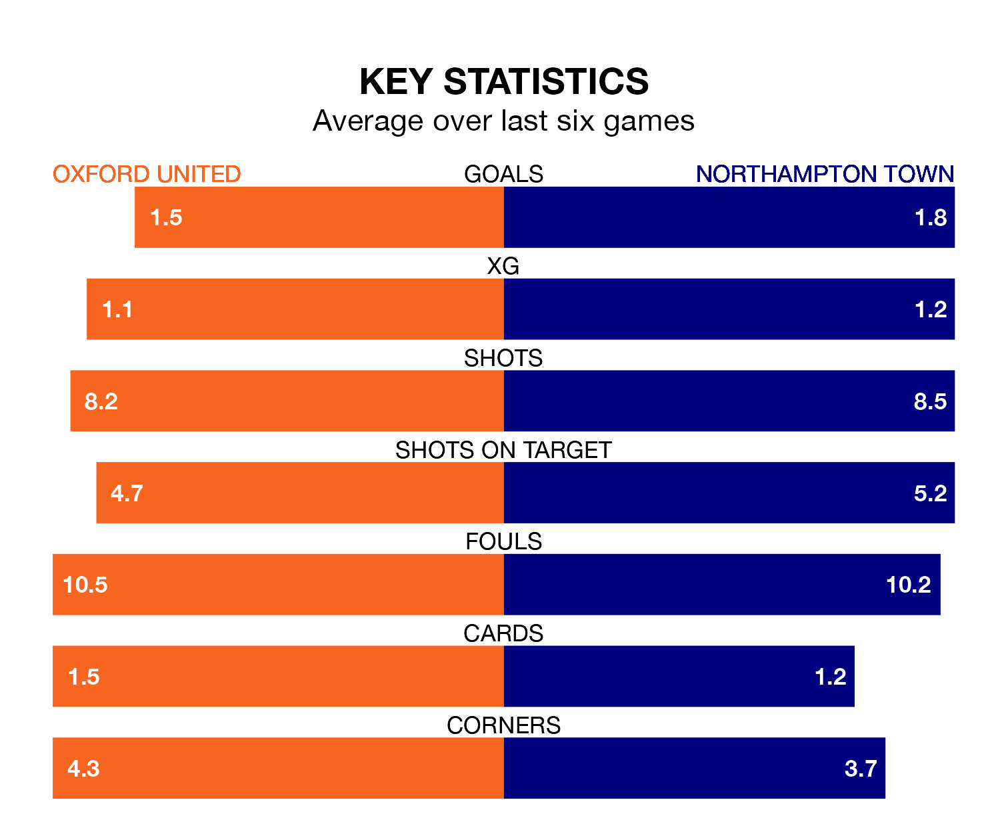

Oxford United face Northampton Town on Tuesday seeking to protect their long unbeaten run in EFL League One.
The Us are unbeaten in five, with one win and four draws, ahead of the 7.45pm kick-off.
They face a Northampton team who have won just one and drawn one over the same number of games.
With 54 goals in 33 games so far this season, Oxford are scoring more than average in the league with 1.6 goals per game. And they are conceding fewer than average, letting in 40 goals at a rate of 1.2 per game.
Northampton, meanwhile, are average scorers, with 1.3 goals per game. They have conceded 1.5 goals per game.
In the last 10 years, Oxford and Northampton have played each other on 11 occasions. Oxford won two of them, Northampton seven, and they drew twice.
On average, the Us scored 0.9 goals and the Cobblers 1.0 in those matches.
Their last meeting was on December 23, when Northampton won 2-1 at home.
United are sixth in the table after 33 games, of which they have won 16 and drawn eight, earning 56 points.
Town are six places behind the Us in 12th, with 13 wins and five draws putting them on 44 points.
In Sam Hoskins, the Cobblers have one of the league's sharpest shooters so far this season. He has notched 14 goals in 27 appearances, to sit sixth in the scoring charts.
His goal rate of one every 166 minutes is quicker than that of Mark Thomas Harris, the home team's top scorer with a goal every 273 minutes, and a total of nine goals in 30 games.
Oxford's last match was on Saturday, a 0-0 draw against Wycombe Wanderers.
Northampton beat Bristol Rovers 3-1 last time out, also on Saturday, with Marc Leonard, Mitchell Pinnock and Patrick Brough on the scoresheet.
Tuesday's match will be refereed by Charles Breakspear, who has taken charge of 13 EFL League One games so far this season, issuing five red cards and booking 69 players. He has awarded six penalties.
The last Oxford game Breakspear refereed was a 3-0 home win against Shrewsbury Town on October 3. He is yet to oversee a match featuring Northampton this season.
Updated: 12:18 (UTC), 19/02/24